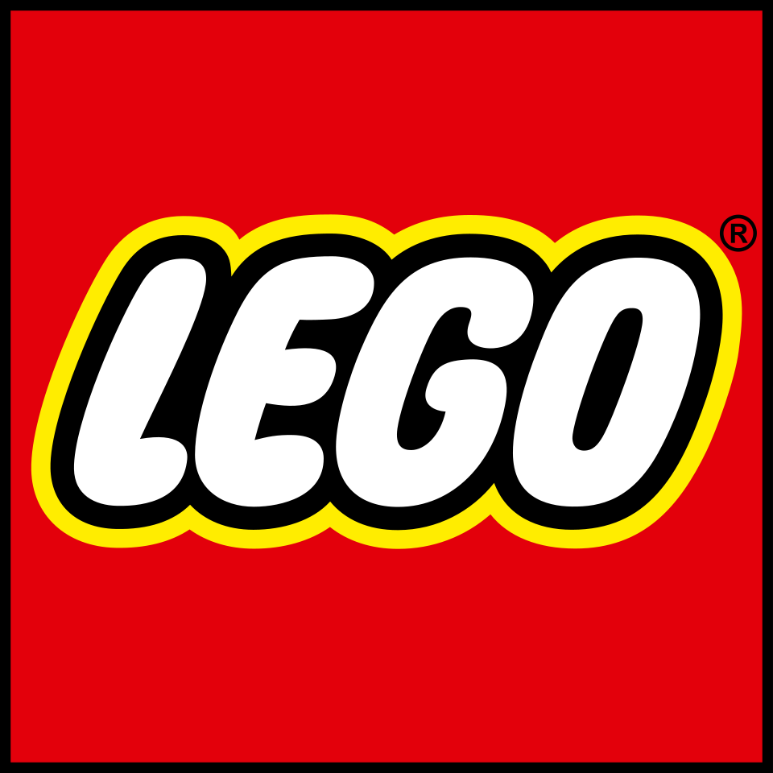
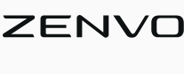

덴마크 브랜드 20
덴마크에서 시작한 브랜드 20개를 로고와 함께 모았습니다. 대표적인 덴마크 브랜드로는 레고(Lego), 뱅앤올룹슨(Bang & Olufsen), 베로 모다(Vero Moda), A.P. 몰러-머스크 그룹(Maersk), 알라 푸드(Arla Foods), 베스타스(Vestas) 등이 있습니다. 수록 기준은 검수된 브랜드 설명이나 공식 웹사이트가 일치하는 위키데이터 개체에서 기원 국가가 확인된 경우로 한정했습니다.
다른 국가 보기
국가별 전체 →산업별로는 식음료 9개, 모빌리티 3개, 헬스·제약 2개, 기술·전자 1개 순입니다. 설립연도가 확인된 브랜드는 20개이며 가장 오래된 곳은 1847년, 가장 최근은 2007년에 시작했습니다. 시기별로는 1900년 이전 6개, 1900~1949년 9개, 1950~1999년 1개, 2000년 이후 4개입니다. 수록 자료로는 로고 이미지 19개, 로고 변천 자료 2개, 연혁 타임라인 1개를 갖췄습니다. 이 가운데 20개는 공식 웹사이트가 일치하는 위키데이터 개체로 연결해 두었습니다.
덴마크 브랜드 목록
 뱅앤올룹슨Bang & Olufsen덴마크 · 1925년
뱅앤올룹슨Bang & Olufsen덴마크 · 1925년뱅앤올룹슨은 오디오를 가전제품이 아니라 공간 속 오브제로 다루는 브랜드다.
 베로 모다Vero Moda덴마크 · 1987년
베로 모다Vero Moda덴마크 · 1987년베로 모다(Vero Moda)는 덴마크 베스트셀러 그룹이 1987년 선보인 젊은 여성을 위한 패션 의류 브랜드이다.
 A.P. 몰러-머스크 그룹Maersk덴마크 · 1904년
A.P. 몰러-머스크 그룹Maersk덴마크 · 1904년A.P. 몰러-머스크 그룹(Maersk)은 덴마크 코펜하겐에 본사를 둔 해운·물류 기업이다.
 알라 푸드Arla Foods덴마크 · 2000년
알라 푸드Arla Foods덴마크 · 2000년알라 푸드(Arla Foods)는 덴마크 Viby에 본사를 둔 덴마크·스웨덴 다국적 낙농 협동조합이다.

레고Lego덴마크 · 1949년레고(Lego)는 덴마크 레고 그룹이 생산하는 조립 블록 제품군이자 상표이다.
 베스타스Vestas덴마크 · 1945년
베스타스Vestas덴마크 · 1945년베스타스(Vestas)는 1945년에 설립된 덴마크의 풍력 터빈 제조업체이다.

젠보 오토모티브Zenvo Automotive덴마크 · 2007년젠보 오토모티브(Zenvo Automotive)는 덴마크 Præstø에 본사를 둔 스포츠카 제조사이다.
 칼스버그Carlsberg Group덴마크 · 1847년
칼스버그Carlsberg Group덴마크 · 1847년칼스버그(Carlsberg Group)는 1847년 J.
 룬드벡Lundbeck덴마크 · 1915년
룬드벡Lundbeck덴마크 · 1915년룬드벡(Lundbeck)은 덴마크의 제약회사로, 우울증·조현병·알츠하이머·파킨슨병 등 중추신경계(CNS) 약제를 개발하고 판매한다.
 레고 그룹The Lego Group덴마크 · 1932년
레고 그룹The Lego Group덴마크 · 1932년레고 그룹(The Lego Group)은 덴마크 빌룬에 본사를 둔 브릭 제품 기업이다.
 단스케 은행Danske Bank덴마크 · 1871년
단스케 은행Danske Bank덴마크 · 1871년단스케 은행(Danske Bank)은 코펜하겐에 본사를 둔 덴마크의 다국적 은행·금융 서비스 기업이다.
 DSB덴마크 · 1885년
DSB덴마크 · 1885년DSB는 덴마크 국유철도 Danske Statsbaner의 약칭으로, 덴마크에서 가장 큰 열차 운영 회사이다.
 Mikkeller덴마크 · 2006년
Mikkeller덴마크 · 2006년Mikkeller는 2006년 덴마크 코펜하겐에서 설립된 크래프트 양조회사이다.
 Albani Brewery덴마크 · 1859년
Albani Brewery덴마크 · 1859년Albani Brewery는 덴마크 오덴세에 있는 양조장으로, 고객 대부분이 퓐섬에 거주한다.
 Tuborg Brewery덴마크 · 1873년
Tuborg Brewery덴마크 · 1873년Tuborg Brewery는 1873년 코펜하겐 북쪽의 항구에서 설립된 덴마크의 양조 회사이다.
 Faxe Brewery덴마크 · 1901년
Faxe Brewery덴마크 · 1901년Faxe Brewery는 덴마크 팍세에 본사를 둔 양조회사이다.
 Amager Bryghus덴마크 · 2007년
Amager Bryghus덴마크 · 2007년Amager Bryghus는 덴마크 Amager 섬에 있는 소규모 양조장이다.
 Fuglsang덴마크 · 1865년
Fuglsang덴마크 · 1865년Fuglsang은 덴마크 남유틀란트의 도시 하데르슬레우에 있던 덴마크의 양조장 브랜드이다.
 Thisted Bryghus덴마크 · 1902년
Thisted Bryghus덴마크 · 1902년Thisted Bryghus는 덴마크 북부 Thisted에 있는 지역 양조장이다.
노보 노디스크(Novo)는 덴마크의 다국적 제약회사이다.